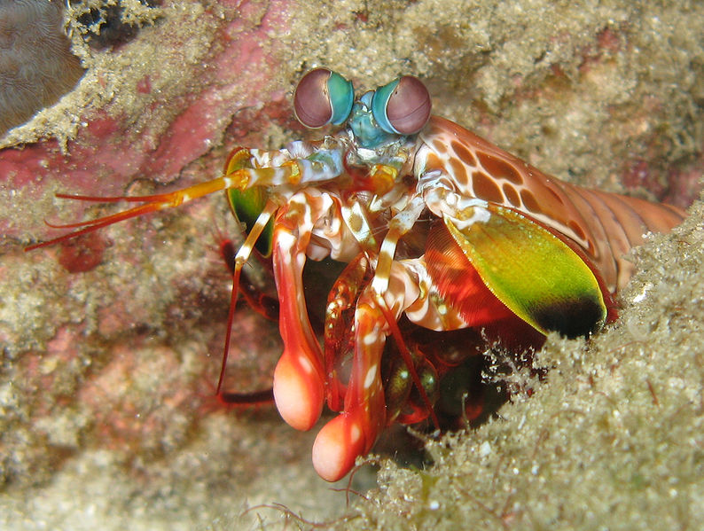

Fatos sobre o Stomatopoda
Guia científico
Batizados com o nome científico de Odontodactylus scyllarus olhos são testamentos da criatividade da evolução. Todos eles fazem as mesmas coisas básicas - detectam a luz e a convertem em sinais elétricos - mas de uma variedade incrível de maneiras. Existem olhos simples e compostos, lentes bifocais e rochosas, espelhos e fibras ópticas. E há olhos que são tão estranhos, tão constantemente surpreendentes que, após décadas de pesquisa, os cientistas apenas descobriram como funcionam, quanto mais por que evoluíram dessa forma. Para encontrá-los, você precisa dar um mergulho. Este é o olho de um camarão mantis - um animal marinho que não é nem mantis nem camarão, mas um parente próximo de caranguejos e lagostas. É um olho composto, feito de milhares de pequenas unidades, cada uma detectando a luz de forma independente. Aqueles na faixa intermediária - a faixa central que você pode ver na foto - são especiais. São eles que deixam o animal ver as cores.
Curiosidades
Os olhos são testamentos da criatividade da evolução. Todos eles fazem as mesmas coisas básicas - detectam a luz e a convertem em sinais elétricos - mas de uma variedade incrível de maneiras. Existem olhos simples e compostos, lentes bifocais e rochosas, espelhos e fibras ópticas. E há olhos que são tão estranhos, tão constantemente surpreendentes que, após décadas de pesquisa, os cientistas apenas descobriram como funcionam, quanto mais por que evoluíram dessa forma. Para encontrá-los, você precisa dar um mergulho.

Este é o olho de um camarão mantis - um animal marinho que não é nem mantis nem camarão, mas um parente próximo de caranguejos e lagostas. É um olho composto, feito de milhares de pequenas unidades, cada uma detectando a luz de forma independente. Aqueles na faixa intermediária - a faixa central que você pode ver na foto - são especiais. São eles que deixam o animal ver as cores.
Selfie do nosso Stomatopoda
Bem bonitinho não é?